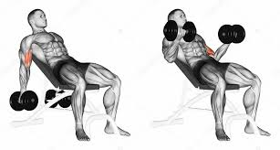
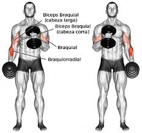
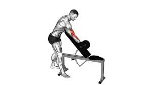

Para aquellos que buscan maximizar el desarrollo de sus bíceps y asegurar un crecimiento equilibrado, un enfoque de entrenamiento bien estructurado es fundamental. Un programa que prioriza la especificidad en el trabajo de cada cabeza muscular, la selección adecuada de ejercicios y un volumen de entrenamiento controlado, demuestra ser una vía inteligente y eficaz hacia la hipertrofia muscular.
Este ejercicio se realiza con un peso que permite completar 3 series de 8 a 12 repeticiones. La posición inclinada de la banca estira la cabeza larga del bíceps, lo que puede potenciar su activación y el estímulo para el crecimiento.

Se ejecuta con un peso que permite 3 series de 8 a 12 repeticiones. El curl martillo es crucial para el desarrollo del músculo braquial y del braquiorradial, lo que contribuye a una mayor densidad y grosor del brazo. La posición neutra de la muñeca en este ejercicio a menudo permite levantar más peso.

Se utiliza un peso que permite 3 series de 8 a 12 repeticiones. El curl predicador aísla eficazmente la cabeza corta del bíceps, minimizando la intervención de otros grupos musculares y concentrando el esfuerzo en esta porción del bíceps.

Esta metodología de entrenamiento es digna de admiración por varias razones de peso:
Se reconoce la complejidad del bíceps braquial, que consta de dos cabezas (larga y corta), y se incluye también el trabajo del músculo braquial, un contribuyente significativo al tamaño y la fuerza del brazo. Al seleccionar ejercicios específicos para cada una de estas porciones, se asegura un desarrollo más completo y armónico, mejorando tanto la estética como la funcionalidad del brazo.
La elección del rango de 8 a 12 repeticiones por serie es ideal para estimular la hipertrofia muscular. Este rango proporciona el tiempo bajo tensión necesario para inducir el daño muscular y la respuesta adaptativa, al mismo tiempo que permite el uso de un peso lo suficientemente desafiante para promover la sobrecarga progresiva.
Limitar el total de series por sesión a 9 (3 series por 3 ejercicios) es una decisión estratégica. Este volumen es suficiente para generar un estímulo de crecimiento sin caer en el temido sobreentrenamiento o en el "volumen basura", donde series adicionales no aportan beneficios y pueden incluso dificultar la recuperación. Un volumen moderado asegura que cada serie sea de alta calidad y que el cuerpo pueda recuperarse eficazmente para la sesión.
La incorporación de tres ejercicios distintos que manipulan la posición del brazo y la muñeca proporciona un estímulo diverso a los músculos. Cada ejercicio desafía al bíceps y al braquial de una manera ligeramente diferente, ayudando a reclutar diversas fibras musculares y a prevenir el estancamiento.
Aunque no se detalla, la selección de un peso que permite completar el rango de 8 a 12 repeticiones implica un compromiso con la intensidad adecuada. La esencia del crecimiento muscular radica en la sobrecarga progresiva, es decir, aumentar gradualmente el peso, las repeticiones o la dificultad a lo largo del tiempo. Esta rutina permite canalizar la energía hacia series de alta calidad, impulsando los límites en cada entrenamiento.
En definitiva, esta rutina de bíceps representa una estrategia de entrenamiento astuta y altamente efectiva para el desarrollo muscular óptimo. Al centrarse en la especificidad, el volumen adecuado y la variedad, se maximizan las ganancias y se minimiza el riesgo de sobreentrenamiento, construyendo brazos fuertes y bien definidos.